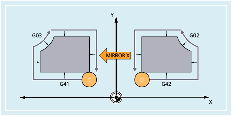

Tool radius compensation
With command MIRROR/AMIRROR, the control system automatically switches over the direction of the tool radius compensation corresponding to the changed machining direction (G41 → G42 and/or G42 → G41). The same applies to the circle direction of rotation (G02 → G03 or G03 → G02).
| Note |
If an additive rotation with AROT is programmed after MIRROR, in some cases, reversed directions of rotation (positive/negative or negative/positive) must be used. Mirrors on the geometry axes are converted automatically by the control into rotations and, where appropriate, mirrors on the mirror axis specified in the machine data. This also applies to settable work offsets. |
Mirror axis
In the default setting, mirroring is around the programmed axis.
Deviating from this, mirroring can also always refer to a fixed axis if the following machine data is not set to zero:
MD10610 $MN_MIRROR_REF_AX = <value>
Value | Meaning |
|---|---|
0 | Mirroring is performed around the programmed axis (default setting). |
1 | X axis is the reference axis With this setting, mirroring operations are realized as follows:
|
2 | The Y axis is the reference axis. With this setting, mirroring operations are realized as follows:
|
3 | The Z axis is the reference axis. With this setting, mirroring operations are realized as follows:
|
Interpreting the programmed values
The interpretation of the programmed values depends on the setting of machine data:
MD10612 $MN_MIRROR_TOGGLE = <value>
Value | Meaning |
|---|---|
0 | Toggle function active (default setting) |
1 | Programmed axis values are evaluated:
|